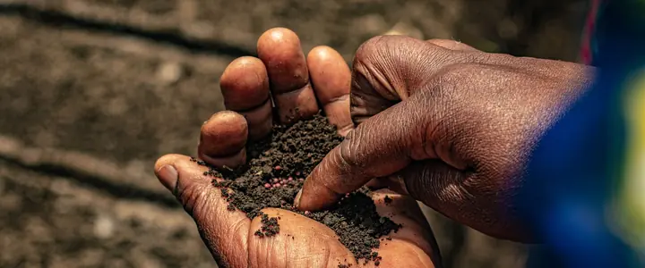
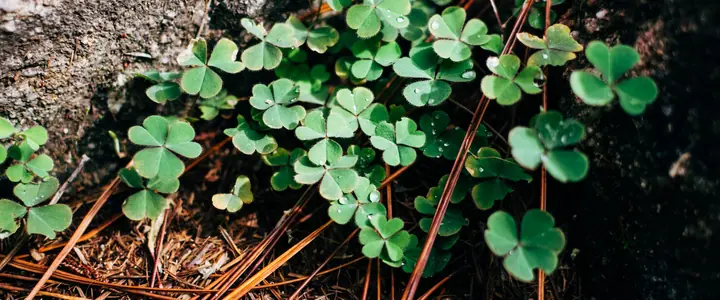
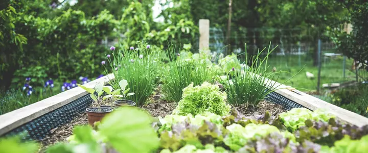

What to plant in November in Oregon and Washington
Wet and dark west of the Cascades, frozen to the east. Protect what's still growing and put the rest to bed. Up to 6 of our plants can go in somewhere in the Northwest this month.
What to plant in November, by region
West-side valleys (Portland): plant garlic, shallots, tulips, daffodils, camas and peonies outside.
Coast (Astoria): plant garlic, shallots, tulips, daffodils, camas and peonies outside.
Columbia Basin and eastern valleys (Pendleton): plant garlic, shallots, tulips, daffodils, camas and peonies outside.
High desert (Bend and Redmond): nothing goes in this month.
Inland Northwest (Spokane): nothing goes in this month.
November planting dates
Dates are for one typical town in each region. Colder gardens run later; use the planner for your own town.
| Plant | West-side valleys | Coast | Columbia Basin and eastern valleys | High desert | Inland Northwest |
|---|---|---|---|---|---|
| Plant Oct 1 – Nov 15 | Plant Oct 1 – Nov 15 | Plant Oct 1 – Nov 1 | — | — | |
| Plant Oct 1 – Nov 15 | Plant Oct 1 – Nov 15 | Plant Oct 1 – Nov 1 | — | — | |
| Plant Oct 1 – Nov 15 | Plant Oct 1 – Nov 15 | Plant Oct 1 – Nov 1 | — | — | |
| Plant Oct 1 – Nov 15 | Plant Oct 1 – Nov 15 | Plant Oct 1 – Nov 1 | — | — | |
| Plant Oct 1 – Nov 15 | Plant Oct 1 – Nov 15 | Plant Oct 1 – Nov 1 | — | — | |
| Plant Oct 1 – Nov 15 | Plant Oct 1 – Nov 15 | Plant Oct 1 – Nov 1 | — | — |
November garden jobs
Plant and sow
- Finish planting garlic early in the month. West side
- Plant bare-root roses and fruit trees when they arrive at nurseries. West side
Start indoors
- Nothing to start yet. Take stock of leftover seed and note what to reorder.
Harvest
- Kale, leeks, cabbage, Brussels sprouts and root crops as needed. West side
- Bring in the last carrots and beets before the ground freezes. East side
Garden care
- Mulch garlic and overwintering crops with straw or leaves.
- Drain and store hoses before hard freezes. East side
- Test soil pH. Most Northwest soils run acidic and benefit from lime spread over winter. West side
- Cover bare beds with leaves, a tarp or a cover crop so rain doesn't compact them.
Pests and problems
- Clean up diseased plant debris; don't compost blighted tomato vines.
- Check stored squash and potatoes every couple of weeks for rot.
Fruit, berries and flowers
- Mulch blueberries, raspberries and perennials before hard freezes.
- Wrap young fruit tree trunks to keep voles and rodents off. East side
Read next

Soil pH in the Northwest: Testing, Lime and When to Leave It AloneHeavy rain makes many west-side soils acidic, while east-side soils lean the other way. Here's how to find out what you have and what to do about it.
Winter Cover Crops for Northwest Vegetable BedsWhy to sow cover crops in empty beds each fall, which ones grow well in Oregon and Washington, and how to turn them under in spring.
Raised Beds for Rainy Northwest GardensWhy raised beds suit the Northwest so well, how big and deep to build them, what to fill them with, and the mistakes to avoid.